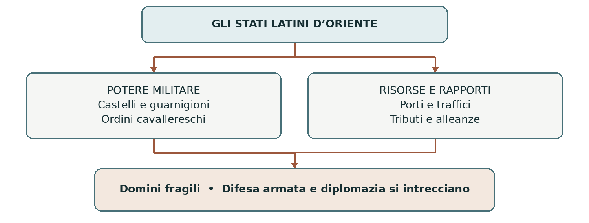
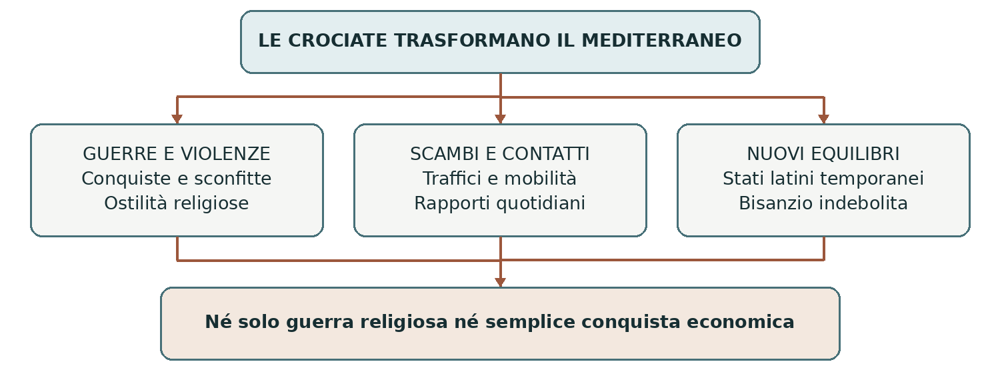

IL MEDITERRANEO MEDIEVALE
Le crociate
Fede, guerra e conquista tra Occidente e Oriente
Alla fine dell’XI secolo migliaia di uomini e donne dell’Europa occidentale si misero in viaggio verso il Mediterraneo orientale. La spedizione militare che conquistò Gerusalemme nel 1099 fu accompagnata da speranze religiose, ambizioni politiche e violenze. Da quell’impresa nacquero nuovi domini e conflitti destinati a durare per quasi due secoli.
0 Domanda generatrice
Come poté un pellegrinaggio per la salvezza dell’anima trasformarsi in una guerra di conquista? La domanda ci invita a capire una società nella quale religione, potere e vita quotidiana erano strettamente collegati. Non basta individuare una sola causa: occorre distinguere le intenzioni dei partecipanti, le decisioni dei capi e gli effetti sulle popolazioni coinvolte.
In sintesi Le crociate unirono devozione e uso delle armi. Per comprenderle dobbiamo partire dal mondo che le rese possibili.
1 Il mondo precedente
Nell’Europa cristiana la ricerca della salvezza orientava molte scelte. Il pellegrinaggio, compiuto per devozione o penitenza, portava i fedeli a Roma, a Santiago di Compostela e a Gerusalemme, città della passione e della risurrezione di Gesù. Viaggiare comportava spese, fatica e pericoli: non era un’esperienza turistica, ma un atto religioso.
Gerusalemme era importante anche per ebrei e musulmani. Governata da poteri islamici fin dal VII secolo, ospitava comunità di fedi diverse. La condizione dei cristiani e l’accesso dei pellegrini variarono nel tempo: il governo musulmano non significò una proibizione permanente e uniforme dei pellegrinaggi.
Dall’XI secolo l’Occidente conobbe crescita della popolazione, ampliamento delle coltivazioni e ripresa degli scambi. Era una società gerarchica, ma non immobile. La nobiltà guerriera difendeva patrimoni e prestigio; il papato riformatore rivendicava una più forte guida della cristianità. Queste trasformazioni prepararono il terreno alla mobilitazione crociata.
In sintesi La centralità della fede si combinò con la crescita dell’Occidente e con le iniziative del papato. La crisi dell’Oriente bizantino fornì un’occasione concreta di intervento.
2 Le fratture: dall’Asia Minore a Clermont
La difficoltà dell’Impero bizantino
Nel 1071, a Manzikert, i Turchi selgiuchidi sconfissero l’imperatore bizantino. La successiva perdita di gran parte dell’Asia Minore ridusse risorse e sicurezza dell’Impero. I Selgiuchidi erano dinastie di origine turca e di religione musulmana: non vanno confusi con gli Ottomani, protagonisti di un’epoca successiva.
Negli anni Settanta dell’XI secolo anche Gerusalemme passò sotto un potere turco. Guerre e instabilità alimentarono in Occidente notizie allarmanti sui cristiani orientali e sui luoghi santi. Il quadro non fu però quello di un mondo musulmano compatto: esistevano rivalità tra dinastie e centri di potere. Nel 1098, prima dell’arrivo dei crociati, Gerusalemme fu ripresa dai Fatimidi d’Egitto.
L’appello del 1095
L’imperatore Alessio I Comneno cercò aiuti militari occidentali contro i Turchi. Nel 1095, al concilio di Clermont, papa Urbano II promosse una spedizione in soccorso dei cristiani d’Oriente, legata al raggiungimento di Gerusalemme. La mobilitazione assunse dimensioni e obiettivi ben più ampi dell’aiuto che Bisanzio intendeva ottenere.
Il papa offriva un beneficio penitenziale a chi partiva con motivazioni religiose: il viaggio poteva sostituire le penitenze dovute per i peccati. Non era un’autorizzazione a commettere qualsiasi violenza né una garanzia automatica di salvezza. La promessa religiosa aiutava a rendere l’impresa un dovere spirituale per chi assumeva il voto.
Cause di fondo e occasione immediata
Cause e condizioni | Occasione e decisione |
|---|---|
Devozione, pellegrinaggi, cultura cavalleresca e crescita dell’Occidente. | Crisi bizantina e richiesta di aiuto di Alessio I. |
Papato riformatore e volontà di guidare la cristianità. | Appello di Urbano II a Clermont nel 1095. |
In sintesi La richiesta bizantina contribuì a far scattare la mobilitazione; il papato le diede un significato religioso e un orizzonte più ampio. Per capire chi rispose occorre considerare interessi diversi.
3 Attori, gruppi e motivazioni
Protagonisti | Che cosa cercano | Tensioni e limiti |
|---|---|---|
Papato | Guida religiosa, aiuto all’Oriente e tutela dei luoghi santi. | Non controlla ogni decisione degli eserciti. |
Principi e cavalieri | Penitenza, prestigio, fedeltà ai propri signori; talvolta nuovi domini. | La partenza costa molto e comporta gravi rischi. |
Pellegrini non combattenti | Devozione, speranza e partecipazione alla mobilitazione. | Dipendono da rifornimenti e protezione. |
Impero bizantino | Aiuti contro i Turchi e recupero dei territori perduti. | Teme l’autonomia dei capi occidentali. |
Città marinare | Trasporti, traffici e privilegi nei porti. | Hanno anche rapporti con poteri musulmani e bizantini. |
Poteri e abitanti dell’Oriente | Difesa, sopravvivenza, interessi locali e alleanze. | Sono divisi politicamente e religiosamente. |
La crociata non fu una semplice partenza di figli cadetti privi di eredità. Parteciparono anche signori ricchi e proprietari, che dovettero vendere o impegnare beni per finanziare il viaggio; molti superstiti tornarono in Europa. La ricerca di terre fu importante per alcuni, ma non spiega da sola l’intero movimento.
Nemmeno la fede e l’interesse materiale si escludevano a vicenda. Un cavaliere poteva desiderare sinceramente la salvezza e, insieme, cercare onore o potere. Bisogna evitare di attribuire a tutti i partecipanti la stessa intenzione.
In sintesi Le crociate mobilitarono gruppi diversi. Il loro incontro produsse un’impresa comune, ma anche contrasti che emersero fin dalla prima spedizione.
4 La prima crociata: dalla partenza al 1099
La spedizione popolare del 1096
La predicazione suscitò un entusiasmo che oltrepassò il reclutamento dei combattenti. Nel 1096 partirono gruppi eterogenei, fra i quali quelli legati a Pietro l’Eremita: la tradizionale espressione “crociata dei poveri” non deve far pensare a un esercito composto soltanto da contadini. Vi erano anche uomini armati e piccoli nobili.
Alcune bande crociate assalirono le comunità ebraiche della Renania, compiendo stragi e conversioni forzate. Trasformavano gli ebrei, vicini di casa nell’Europa cristiana, in nemici religiosi. Non tutti i gruppi agirono nello stesso modo e alcuni vescovi cercarono di proteggere gli ebrei. Queste violenze mostrano quanto la mobilitazione religiosa potesse alimentare persecuzioni.
Una parte della spedizione popolare raggiunse Costantinopoli e attraversò il Bosforo. Nell’autunno del 1096 fu sconfitta dai Turchi in Asia Minore, presso Nicea. Non fu distrutta dai crociati nobili: impreparazione, difficoltà di rifornimento e superiorità militare avversaria contribuirono al disastro.
La spedizione dei principi
Gli eserciti meglio organizzati partirono dall’Europa nel 1096 e si riunirono nell’area di Costantinopoli. Tra i capi vi erano Goffredo di Buglione, Raimondo di Tolosa, Roberto di Normandia e Boemondo d’Altavilla. Non formavano un esercito nazionale né avevano un unico sovrano al comando. La cooperazione con Alessio I fu accompagnata da diffidenza e dispute sui territori da riconquistare.
Data | Passaggio decisivo |
|---|---|
1097 | Campagna in Asia Minore: presa di Nicea, tornata a Bisanzio, e vittoria di Dorileo. |
1098 | Conquista di Antiochia; formazione della contea di Edessa. |
15 luglio 1099 | Gerusalemme viene espugnata dopo un assedio. |
La conquista di Gerusalemme fu accompagnata da massacri di abitanti musulmani ed ebrei. Le cronache descrivono violenze estreme, spesso con immagini retoriche: non consentono un conteggio sicuro delle vittime. Per i vincitori il successo ebbe valore religioso; per chi subì l’assalto fu una catastrofe.
In sintesi La prima crociata raggiunse Gerusalemme, ma la conquista aprì un nuovo problema: come conservare territori lontani con risorse limitate?
Dalla conquista agli Stati latini d’Oriente
Domini diversi, nati in tempi diversi
Le conquiste produssero quattro principali Stati latini, così chiamati perché le élite dominanti provenivano dalla cristianità occidentale. Non furono tutti creati dopo la presa di Gerusalemme, né costituirono un unico Stato centralizzato. Avevano propri governanti, rivalità e diversi rapporti di dipendenza.
Dominio | Formazione | Posizione |
|---|---|---|
Contea di Edessa | 1098 | Entroterra della Mesopotamia settentrionale. |
Principato di Antiochia | 1098 | Siria settentrionale, vicino al Mediterraneo. |
Regno di Gerusalemme | 1099–1100 | Palestina e tratti della costa. |
Contea di Tripoli | 1109 | Costa fra Antiochia e Gerusalemme. |
A Gerusalemme Goffredo di Buglione assunse il governo senza il titolo di re; Baldovino I fu incoronato nel 1100. I dominatori latini erano una minoranza rispetto alle popolazioni locali, che comprendevano cristiani orientali, musulmani ed ebrei. Sottomissione e conflitto convivevano con attività economiche e rapporti quotidiani.
Difesa, porti e diplomazia
Castelli e guarnigioni proteggevano strade e punti strategici. Gli ordini religioso-militari, soprattutto Templari e Ospitalieri, unirono vita religiosa e funzioni armate; gli Ospitalieri mantennero anche attività di assistenza. Genova, Pisa e Venezia fornirono, in momenti diversi, navi e sostegno, ottenendo quartieri e privilegi commerciali.
La difesa non dipendeva soltanto dalle armi. I principi latini conclusero tregue e alleanze anche con governanti musulmani. Le divisioni dei loro avversari facilitarono inizialmente la sopravvivenza dei nuovi Stati; una maggiore concentrazione del potere musulmano rese poi più difficile conservarli.

In sintesi Gli Stati latini ebbero bisogno di rinforzi, risorse marittime e accordi locali. La loro fragilità spiega le nuove spedizioni dall’Europa.
Le nuove spedizioni e il caso del 1204
La seconda e la terza crociata
Nel 1144 la conquista musulmana di Edessa suscitò una nuova mobilitazione. La seconda crociata (1147–1149), sostenuta dalla predicazione di Bernardo di Chiaravalle e guidata dai sovrani Luigi VII e Corrado III, fallì. Il tentativo di conquistare Damasco nel 1148 non restituì ai Latini i territori perduti.
Nel 1187 Saladino, che aveva riunito sotto il proprio potere l’Egitto e larga parte della Siria, sconfisse l’esercito del regno di Gerusalemme a Hattin e riprese la città santa. La terza crociata (1189–1192) coinvolse Federico Barbarossa, Filippo II Augusto e Riccardo Cuor di Leone. Barbarossa morì durante il viaggio, nel 1190. Gli altri eserciti riconquistarono Acri; Gerusalemme rimase a Saladino, ma un accordo consentì l’accesso dei pellegrini cristiani.
La quarta crociata contro una capitale cristiana
La quarta crociata (1202–1204) mostra con particolare chiarezza come una spedizione potesse cambiare obiettivo. I crociati non riuscirono a pagare il trasporto concordato con Venezia. Il debito, le scelte veneziane e l’intervento in una contesa dinastica bizantina contribuirono a deviare l’impresa.
Dopo l’attacco a Zara, città cristiana, i crociati raggiunsero Costantinopoli. Nel 1204 la conquistarono e la saccheggiarono, creando un Impero latino d’Oriente. Venezia ottenne importanti vantaggi territoriali e commerciali. Il papa aveva vietato gli attacchi contro i cristiani: l’esito non corrispose al progetto iniziale di recuperare la Terrasanta.
Obiettivo dichiarato | Decisioni durante la spedizione | Esito |
|---|---|---|
Colpire i poteri musulmani e recuperare i luoghi santi. | Debiti, attacco a Zara e ingerenza nella successione bizantina. | Sacco di Costantinopoli e spartizione di territori nel 1204. |
I Bizantini ripresero Costantinopoli nel 1261, ma l’Impero non recuperò la sua antica forza. Il saccheggio approfondì l’ostilità fra cristiani latini e greci: la comune fede cristiana non impedì una guerra di conquista.
In sintesi Le spedizioni ebbero obiettivi, protagonisti e risultati diversi. Nel Duecento divenne decisiva anche la lotta per l’Egitto, centro del potere musulmano nella regione.
Il Duecento: armi, accordi e perdita della costa
La via egiziana e la diplomazia di Federico II
La quinta crociata (1217–1221) puntò sull’Egitto: conquistarlo avrebbe indebolito il potere che controllava Gerusalemme. I crociati presero Damietta nel 1219, ma la successiva avanzata fallì e dovettero ritirarsi nel 1221. La conoscenza del territorio, i rifornimenti e il coordinamento delle forze contavano quanto il numero dei combattenti.
Un percorso diverso fu seguito da Federico II. Partito nel 1228 mentre era scomunicato, nel 1229 concluse un accordo con al-Kamil, sultano ayyubide d’Egitto. Gerusalemme, Betlemme e Nazareth passarono sotto controllo cristiano con condizioni e limiti; l’area dei santuari islamici di Gerusalemme rimase affidata ai musulmani. La tregua, prevista per dieci anni, non assicurò un dominio stabile e completo della regione.
Quella che viene chiamata sesta crociata (1228–1229) dimostra che anche il negoziato poteva ottenere risultati. L’accordo non cancellò però l’ostilità fra l’imperatore e il papa. Gerusalemme fu definitivamente perduta dai Latini nel 1244.
Luigi IX e l’avanzata dei Mamelucchi
Il re di Francia Luigi IX guidò la settima crociata (1248–1254). Attaccò l’Egitto, ma nel 1250 fu sconfitto e fatto prigioniero; liberato dietro riscatto, rimase alcuni anni nel Levante. Nel 1270 guidò l’ottava crociata, diretta a Tunisi, dove morì durante un’epidemia. Tunisi non fu raggiunta per un errore di navigazione: la scelta rispondeva a calcoli politici e religiosi.
Intanto i Mamelucchi, divenuti dominatori dell’Egitto, conquistarono progressivamente le piazzeforti latine. Nel 1291 cadde Acri, principale centro dei Latini in Terrasanta. La perdita delle ultime posizioni costiere pose fine alla presenza territoriale crociata sulla terraferma siro-palestinese; non cancellò ogni dominio latino nel Mediterraneo né l’idea di crociata.
Perché si parla di otto crociate?
La numerazione da uno a otto è una convenzione utile per studiare le maggiori spedizioni verso il Mediterraneo orientale. Non comprende tutte le iniziative crociate: ve ne furono anche nella penisola iberica, nel Baltico e contro gli eretici, come i catari. Il movimento non terminò dunque in ogni sua forma nel 1291.
In sintesi Le conquiste latine in Terrasanta non furono durature. Le vicende del Duecento mostrano il peso della diplomazia, delle risorse e dei nuovi equilibri regionali.
5 Le fonti in dialogo
Le fonti non sono finestre neutrali sul passato: ogni autore seleziona fatti e parole secondo il proprio ruolo. I due testi presentati qui riguardano momenti diversi. Servono a confrontare il linguaggio della mobilitazione con le esperienze dei contatti quotidiani.
A Urbano II: mobilitare i cristiani
Chi, quando, dove. Urbano II, lettera ai fedeli delle Fiandre, dicembre 1095. Il testo è successivo all’appello di Clermont. Le versioni narrative del discorso al concilio, invece, furono scritte da cronisti e non sono una trascrizione stenografica.
Contenuto, in parafrasi. Il papa richiama le sofferenze delle Chiese orientali, sollecita una spedizione e la collega a un beneficio spirituale. Indica nel vescovo Ademaro di Le Puy il proprio rappresentante e stabilisce il momento della partenza. La lettera presenta l’impresa come un dovere religioso organizzato sotto guida pontificia. [F1]
Che cosa ci insegna. Il documento permette di ricostruire l’iniziativa del papa e il messaggio rivolto ai fedeli. Non dimostra che ogni partecipante avesse soltanto motivazioni religiose, né che le descrizioni della condizione orientale fossero imparziali.
B Usama ibn Munqidh: incontrare i Franchi
Chi, quando, dove. Usama ibn Munqidh, aristocratico e uomo di lettere musulmano della Siria, visse dal 1095 al 1188. Nelle sue memorie, composte in età avanzata, raccontò incontri con i “Franchi”, nome usato in Oriente per gli occidentali latini.
Contenuto, in parafrasi. Usama ricorda un cavaliere franco che lo trattava da amico e gli propose di mandare suo figlio in Europa per educarlo. Usama respinse l’idea: la familiarità personale non gli impediva di giudicare negativamente i costumi dei Franchi. Nell’episodio si intrecciano amicizia e diffidenza culturale. [F2]
Che cosa ci insegna. Le relazioni personali potevano oltrepassare lo scontro religioso. Ma il ricordo di un aristocratico non rappresenta tutte le esperienze di musulmani e cristiani, né prova una convivenza sempre pacifica.
Metti a confronto | Domanda da rivolgere ai testi |
|---|---|
Autore e scopo | Chi vuole convincere o rappresentare ciascun autore? |
Esperienza e generalizzazione | Che cosa possiamo ricavare dal singolo episodio? Che cosa non possiamo estendere a tutti? |
Conflitto e contatto | Come possono convivere ostilità religiosa e rapporti personali? |
In sintesi La propaganda della guerra e la complessità degli incontri appartengono alla stessa storia. Per comprenderne gli esiti occorre tenere insieme entrambe le dimensioni.
6 Conseguenze e trasformazioni
Violenza, relazioni e nuovi equilibri
Le crociate causarono morti, devastazioni, persecuzioni e spostamenti di popolazione. Le stragi del 1096 e del 1099 non furono episodi marginali per chi le subì. Il linguaggio della guerra religiosa rafforzò ostilità verso altre comunità, pur senza impedire tregue, alleanze e scambi.
Per il papato la mobilitazione fu uno strumento di prestigio e di iniziativa sovraregionale, ma mise anche in luce i limiti del suo controllo sugli eserciti. Gli Stati latini furono una nuova presenza politica in Oriente, fragile e temporanea. Il saccheggio del 1204 contribuì invece a un indebolimento duraturo dell’Impero bizantino.
Le città marinare ampliarono reti e privilegi. Tuttavia le crociate non crearono da zero il commercio mediterraneo: i traffici esistevano prima e continuarono anche fra avversari religiosi. Gli scambi culturali fra mondo islamico e Occidente passarono inoltre attraverso più vie, tra cui la penisola iberica e la Sicilia. Non ogni trasferimento di conoscenze va attribuito alle spedizioni armate.

In sintesi Le crociate modificarono poteri e relazioni, ma i loro effetti variarono secondo luoghi e gruppi. Non produssero una vittoria definitiva della cristianità sull’Islam.
7 Conclusione: rispondere alla domanda iniziale
Il pellegrinaggio poté diventare guerra perché il papato attribuì un valore penitenziale a una spedizione armata e perché la società cavalleresca riconobbe nella difesa dei luoghi santi un compito religioso. Il viaggio richiedeva però eserciti, denaro, navi e accordi: fin dall’inizio la fede si intrecciò alla politica e alla conquista.
Non dobbiamo quindi immaginare una prima fase completamente disinteressata, seguita da una fase soltanto economica. Le motivazioni furono sempre molteplici e gli esiti dipendevano da decisioni concrete. Studiare le crociate significa comprendere questo intreccio e considerare anche l’esperienza delle popolazioni che subirono le spedizioni.
Orientarsi nel tempo e nello spazio
Cronologia essenziale
Data | Evento | Perché conta |
|---|---|---|
1071 | Battaglia di Manzikert. | La crisi bizantina prepara la richiesta di aiuto. |
1095 | Appello di Urbano II a Clermont. | Il papa avvia la mobilitazione. |
1096–1099 | Prima crociata; Gerusalemme conquistata nel 1099. | Nascono i primi domini latini. |
1144; 1147–1149 | Caduta di Edessa; seconda crociata. | Il tentativo di reagire fallisce. |
1187; 1189–1192 | Hattin e perdita di Gerusalemme; terza crociata. | Si recupera Acri, non Gerusalemme. |
1202–1204 | Quarta crociata. | Costantinopoli è saccheggiata nel 1204. |
1217–1221 | Quinta crociata. | Fallisce il tentativo di conquistare l’Egitto. |
1228–1229 | Sesta crociata di Federico II. | Accordo con al-Kamil nel 1229. |
1244 | Perdita definitiva di Gerusalemme per i Latini. | Finisce il recupero ottenuto per accordo. |
1248–1254 | Settima crociata di Luigi IX. | Sconfitta e prigionia in Egitto nel 1250. |
1270 | Ottava crociata, diretta a Tunisi. | Muore Luigi IX; la spedizione fallisce. |
1291 | Caduta di Acri. | Fine delle principali posizioni latine sulla terraferma. |
Una geografia da ricostruire sull’atlante
Il percorso terrestre della prima crociata collegò Europa occidentale, Costantinopoli, Asia Minore, Antiochia e Gerusalemme. Costantinopoli controllava il passaggio fra Europa e Asia; Antiochia apriva l’accesso alla Siria settentrionale; Gerusalemme si trova nell’interno della Palestina, non sulla costa.
Individua poi Acri, porto sulla costa orientale del Mediterraneo; Damietta, nel delta del Nilo; Tunisi, nell’Africa settentrionale. Le ultime spedizioni non seguirono tutte la strada della prima: colpire l’Egitto significava cercare di indebolire la potenza che dominava la regione dei luoghi santi.
Attenzione alla scala. “Oriente” indica qui soprattutto il Mediterraneo orientale e il Levante. Non descrive un mondo uniforme: vi convivevano lingue, religioni, poteri e comunità differenti.
Parole chiave e saperi irrinunciabili
Il lessico della lezione
Termine | Significato nel contesto |
|---|---|
Crociata | Spedizione armata promossa o riconosciuta dal papato, con voto e benefici religiosi per i partecipanti. |
Pellegrinaggio | Viaggio verso un luogo sacro, compiuto per devozione o penitenza. |
Voto crociato | Impegno religioso a partecipare all’impresa; la croce indossata lo rende visibile. |
Beneficio penitenziale | Remissione o sostituzione di penitenze, legata alle condizioni stabilite dalla Chiesa. |
Latini / Franchi | Nomi con cui sono indicati gli occidentali cristiani nei territori orientali. |
Terrasanta / Levante | La prima espressione indica i luoghi della storia sacra cristiana; la seconda l’area orientale del Mediterraneo. |
Ordine religioso-militare | Comunità che associa regola religiosa e compiti militari, talvolta anche assistenziali. |
Infedele / liberazione | Parole del punto di vista religioso dei protagonisti: vanno contestualizzate, non assunte come giudizi neutrali. |
Dodici idee da saper spiegare
1. La fede dava significato al pellegrinaggio e alla ricerca della salvezza.
2. La richiesta bizantina e l’iniziativa papale trasformarono la crisi in mobilitazione.
3. Clermont, 1095, precede la partenza delle spedizioni del 1096.
4. Devozione, prestigio e interessi materiali potevano convivere.
5. La spedizione popolare e quella dei principi ebbero organizzazione ed esiti diversi.
6. La prima crociata conquistò Gerusalemme nel 1099, con gravi massacri.
7. I quattro Stati latini nacquero in anni diversi e rimasero fragili.
8. Saladino riprese Gerusalemme nel 1187; la terza crociata non la riconquistò.
9. La quarta crociata colpì Costantinopoli, città cristiana, nel 1204.
10. Federico II ottenne un risultato diplomatico con al-Kamil nel 1229.
11. La caduta di Acri nel 1291 non pose fine a tutte le forme di crociata.
12. Gli scambi mediterranei precedettero le crociate e continuarono durante le guerre.
Verificare, collegare, argomentare
Comprendere e ricostruire
1. Distingui due cause di fondo e l’occasione immediata della prima crociata.
2. Spiega perché il 1095, il 1096 e il 1099 indicano tre momenti differenti.
3. Confronta la spedizione popolare e quella dei principi: partecipanti, organizzazione ed esito.
4. Perché gli Stati latini avevano bisogno sia di rinforzi militari sia di alleanze?
5. Confronta la quarta e la sesta crociata: obiettivo, strumenti impiegati e risultato.
Ragionare sulle interpretazioni
6. Correggi questa frase: “I crociati erano tutti nobili senza terre in cerca di ricchezze”. Usa almeno due argomenti.
7. Perché le crociate non possono essere descritte come uno scontro fra due blocchi sempre uniti?
8. Usando le fonti A e B, spiega perché un messaggio di guerra non descrive ogni rapporto quotidiano.
9. In 12–15 righe rispondi alla domanda generatrice. Inserisci un esempio di motivazione religiosa, uno di conquista e uno di negoziato.
Collegare i capitoli
Con la lotta per le investiture: quale ruolo di guida rivendica il papato nell’XI secolo? Con Barbarossa: come si conclude la sua partecipazione alla terza crociata? Con Federico II: perché un accordo in Terrasanta non risolve il conflitto con il papa?
Fonti e letture per approfondire
La lezione sviluppa le mappe sulle crociate alle pp. 2–3 di schemi_storia_classi_terze.pdf. I richiami a Federico II e Luigi IX sono stati verificati e inseriti solo dove pertinenti. I testi della sezione 5 sono parafrasi didattiche, non citazioni letterali.
[F1] Urbano II, lettera ai fedeli delle Fiandre (1095), in Urban II: Speech at Clermont, sezione della lettera. Internet Medieval Sourcebook, Fordham University.
https://sourcebooks.web.fordham.edu/source/urban2-5vers.asp
[F2] Usama ibn Munqidh, Autobiography: Excerpts on the Franks, memorie del XII secolo. Internet Medieval Sourcebook, Fordham University.
https://sourcebooks.web.fordham.edu/source/Usamah2.asp
[S1] Luigi Russo, Le crociate, Reti Medievali, versione 2014: orientamento storiografico e bibliografico.
https://www.rm.unina.it/repertorio/rm_russo_le_crociate.html
[S2] Franco Cardini, Le crociate tra il mito e la storia, percorso didattico, Reti Medievali.
https://www.rm.unina.it/didattica/strumenti/cardini/saggi/sez2/cap03.htm
[S3] Treccani, Crociate; Crociata (Federiciana); La quarta crociata (Storia di Venezia).
https://www.treccani.it/enciclopedia/crociate/